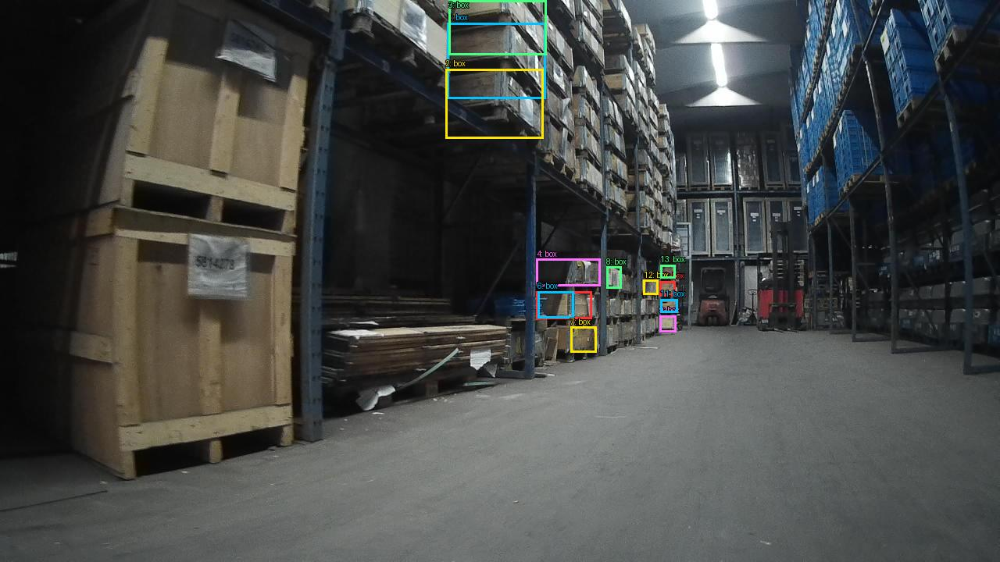

Prejšnji OD (shranjen)


Opis → phrase grounding (nov)

The image shows a large warehouse with rows of wooden pallets and shelves. The pallets are stacked on top of each other and are of different sizes and colors. The shelves are filled with various items such as boxes, crates, and other storage containers. The warehouse appears to be well-stocked and well-organized. The floor is made of concrete and there are several lights hanging from the ceiling. In the background, there is a red forklift parked in the middle of the warehouse. The overall atmosphere of the image is industrial and warehouse-like.

Original · Caption raw · Grounding raw · Koordinate
Številke so lokalni ID regije. Dolge slikovne oznake so skrajšane; spodaj so celotne fraze. Napovedane regije se lahko prekrivajo ali opisujejo skupine.
| ID | Celotna fraza | bbox xyxy |
|---|---|---|
| 1 | The pallets | [408.9599914550781, 371.8800048828125, 656.0, 524.52001953125] |
| 2 | The pallets | [411.5199890136719, 406.44000244140625, 654.719970703125, 492.1200256347656] |
| 3 | The shelves | [1010.5599975585938, 2.5199999809265137, 1275.52001953125, 476.280029296875] |
| 4 | The warehouse | [405.1199951171875, 3.9600000381469727, 873.5999755859375, 527.4000244140625] |
| 5 | The floor | [5.759999752044678, 408.6000061035156, 1274.239990234375, 714.6000366210938] |
| 6 | several lights | [855.6799926757812, 1.8000000715255737, 983.6799926757812, 145.0800018310547] |
| 7 | a red forklift | [963.199951171875, 279.7200012207031, 1034.8800048828125, 425.8800048828125] |